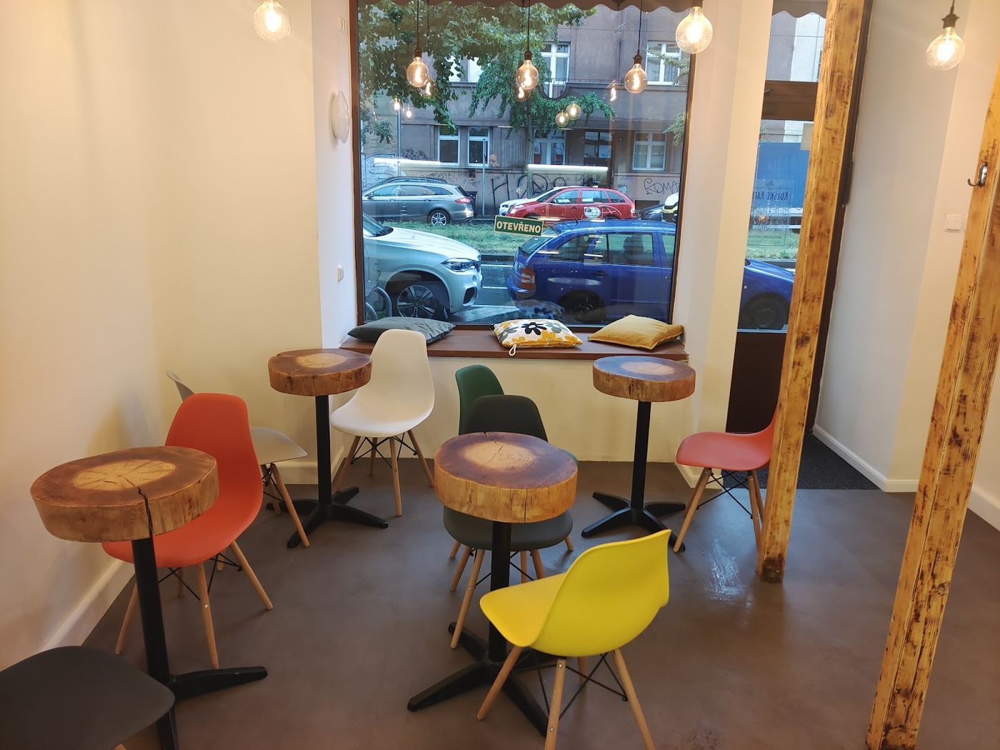
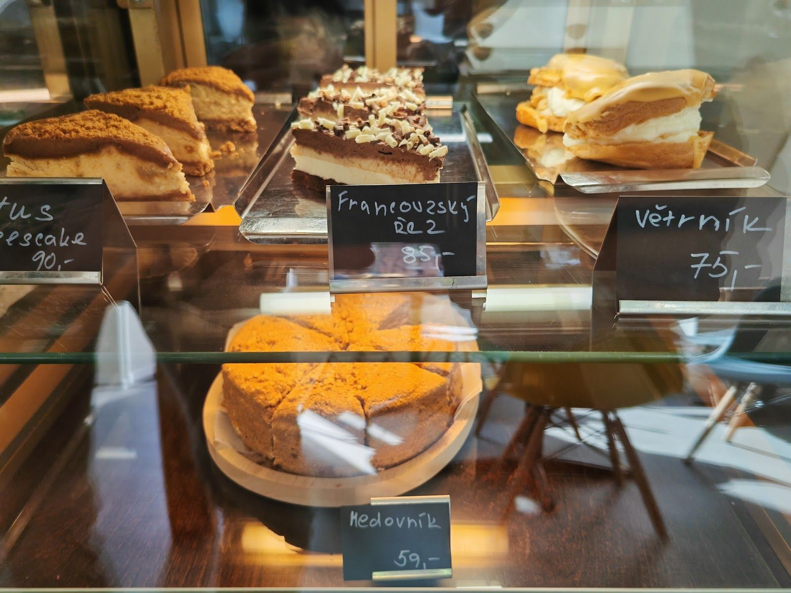
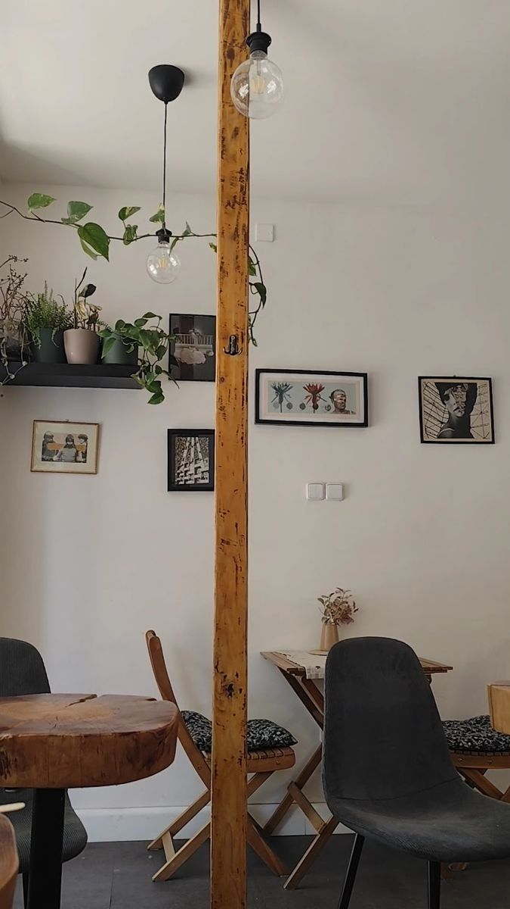
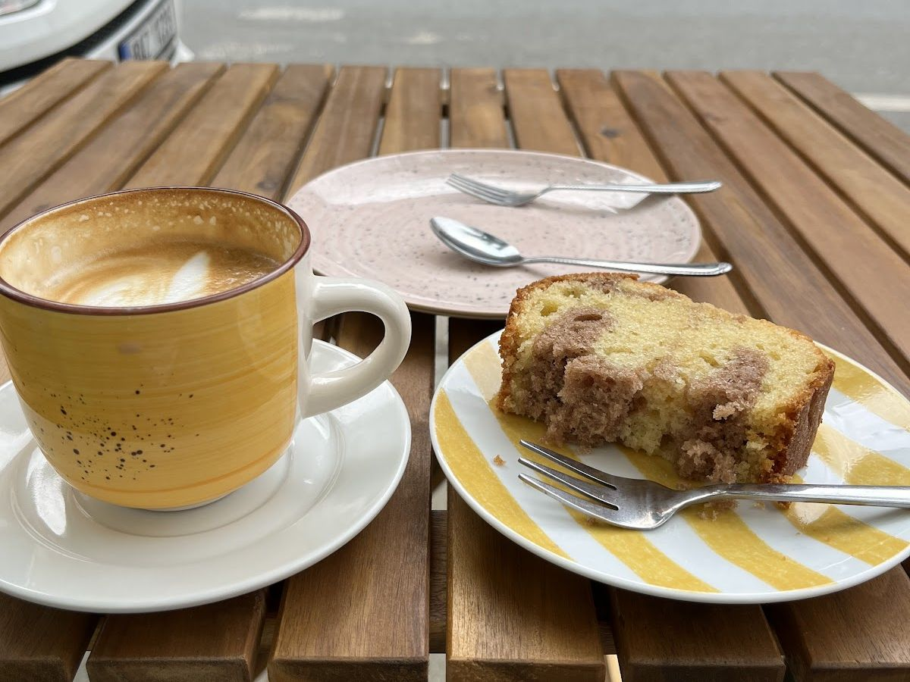
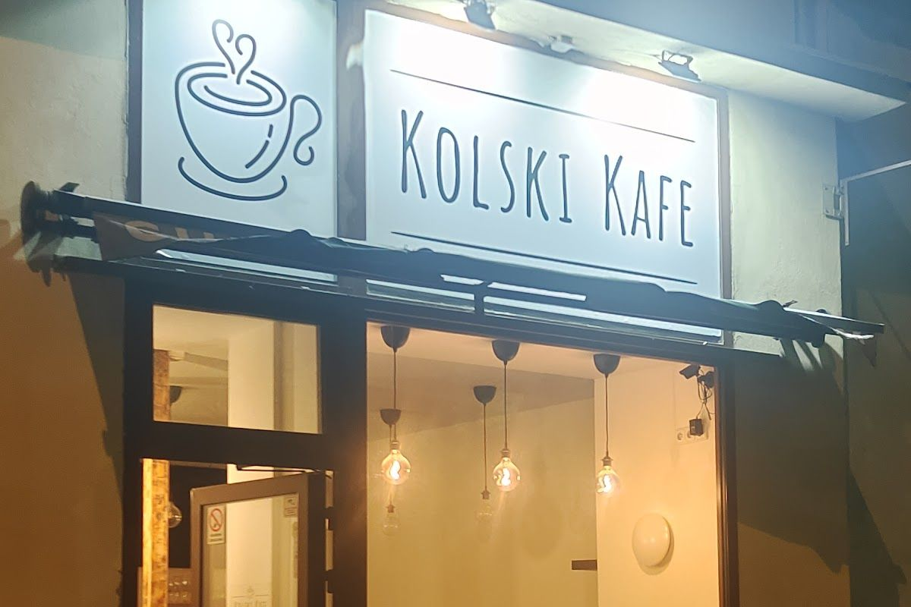

Kolski Kafe
Kavárna a cukrárna na Vršovické, pár minut od vršovického nádraží.
Po–Pá 8:00–18:00, So 9:00–15:30

Ve vitríně

- Lotus cheesecake90,–
- Francouzský řez85,–
- Větrník75,–
- Medovník59,–
Nabídka se mění podle toho, co se zrovna peče.
Kromě zákusků chlebíčky krabí a hermelínový, obložené chleby, polévky a dort na objednávku. Z baru flat white, cappuccino, horká čokoláda a čaje.
Chlebíčky

Šunkový, krabí, hermelínový. Velké, jeden vydá za dva běžné.
Dort na objednávku, třeba k narozeninám, se domlouvá telefonem.
„Výborná kavárnička, velmi milá a pohotová obsluha, výborné zákusky i chlebíčky. Chlebíčky jsou opravdu velké, jeden vydá za dva běžné.“
Eva, Google
V kavárně


- Wi-Fi zdarma, dá se tu pracovat na notebooku
- Obsluha u stolu, vhodné pro děti
- Posezení venku na chodníku
- Platba kartou
„Příjemná, malebná kavárna. Vynikající horká čokoláda i dortík. Příjemný personál, přijatelné ceny. Prostory jsou menší, ale na posezení stačí.“
Marsi, Google
Vršovická 866/3
Praha 10 – Vršovice
- Pondělí až pátek8:00–18:00
- Sobota9:00–15:30
- Nedělezavřeno
Po–Pá 8:00–18:00, So 9:00–15:30

Poznáte to podle hrnku nad výlohou.